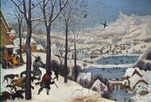

<main><h2>Популярное</h2><h3 class="mb20">Нестареющая классика и бестселлеры </h3><div class="products-slider-wrapper"><div class="products-slider"><div class="product-item" itemscope="itemscope" itemtype="http://schema.org/Product"><div class="product-img"><end></end></div><div class="product-title" itemprop="name">Девушка с жемчужной сережкой, 1665</div><div class="product-author">Ян Вермеер<div class="product-last-line"><div class="product-size" itemprop="size">44x39 см, холст</div><div class="product-price" itemprop="price">900Р</div></div></div></div><div class="product-item" itemscope="itemscope" itemtype="http://schema.org/Product"><div class="product-img"><end></end></div><div class="product-title" itemprop="name">Бонапарт на перевале Сен-Бернар, 1801</div><div class="product-author">Жак-Луи Давид<div class="product-last-line"><div class="product-size" itemprop="size">261x220 см, холст</div><div class="product-price" itemprop="price">3 900Р</div></div></div></div><div class="product-item" itemscope="itemscope" itemtype="http://schema.org/Product" style="max-width:400px"><div class="product-img"><end></end></div><div class="product-title" itemprop="name">Охотники на снегу, 1565</div><div class="product-author">Питер Брейгель Старший<div class="product-last-line"><div class="product-size" itemprop="size">44x39 см, холст</div><div class="product-price" itemprop="price">2 400Р</div></div></div></div></div></div></main>